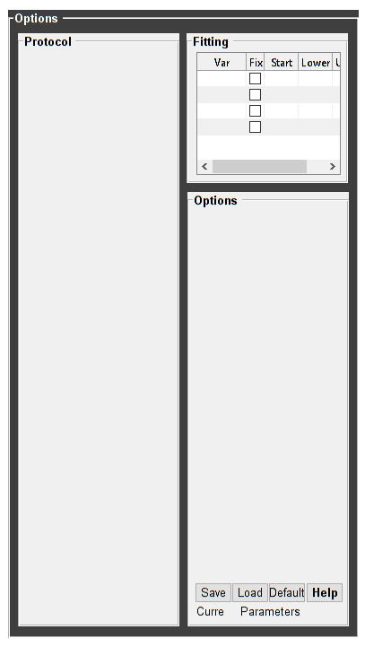
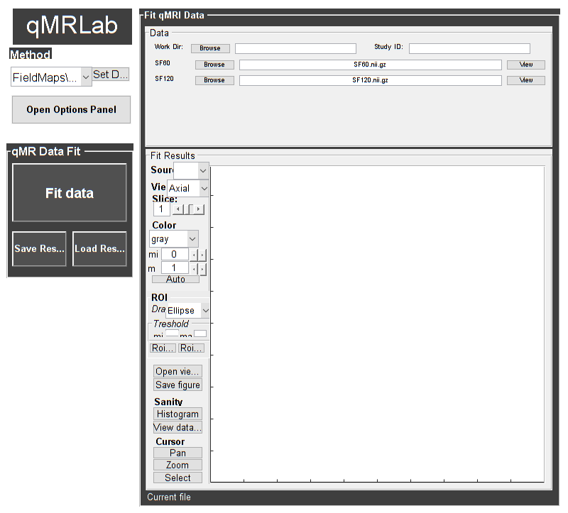

Contents
% Batch to generate B1map with Double-Angle Method (DAM) without qMRLab GUI (graphical user interface) % Run this script line by line % Written by: Ian Gagnon, 2017
Load dataset
[pathstr,fname,ext]=fileparts(which('B1_DAM_batch.m')); cd (pathstr); % Load your parameters to create your Model % load('MODELPamameters.mat'); load('B1_DAMParameters.mat');
Check data and fitting (Optional)
%************************************************************************** % I- GENERATE FILE STRUCT %************************************************************************** % Create a struct "file" that contains the NAME of all data's FILES % file.DATA = 'DATA_FILE'; file = struct; file.SF60 = 'SF60.nii.gz'; file.SF120 = 'SF120.nii.gz'; %************************************************************************** % II- CHECK DATA AND FITTING %************************************************************************** qMRLab(Model,file); 
Create Quantitative Maps
%************************************************************************** % I- LOAD EXPERIMENTAL DATA %************************************************************************** % Create a struct "data" that contains all the data % .MAT file : load('DATA_FILE'); % data.DATA = double(DATA); % .NII file : data.DATA = double(load_nii_data('DATA_FILE')); data.SF60 = double(load_nii_data('SF60.nii.gz')); data.SF120 = double(load_nii_data('SF120.nii.gz')); %************************************************************************** % II- FIT DATASET %************************************************************************** FitResults = FitData(data,Model,1); % 3rd argument plots a waitbar %************************************************************************** % III- SAVE %************************************************************************** % .MAT file : FitResultsSave_mat(FitResults,folder); % .NII file : FitResultsSave_nii(FitResults,fname_copyheader,folder); FitResultsSave_nii(FitResults,'SF60.nii.gz'); %save('Parameters.mat','Model');
Check the results
Load them in qMRLab